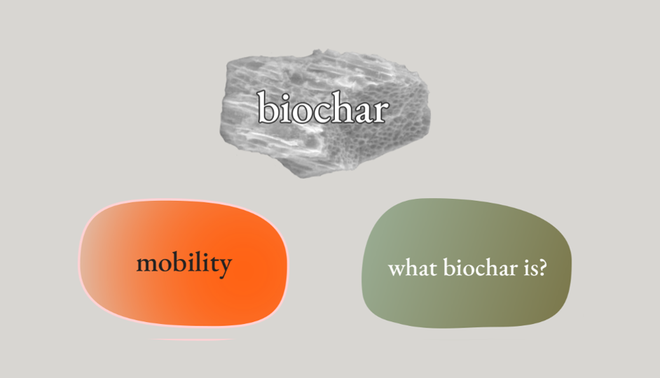
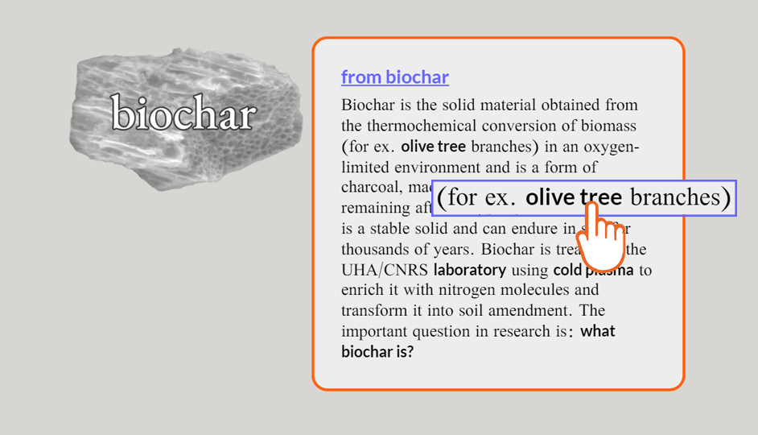

Tempographies aims to share and open up knowledge about the
interdisciplinarity
and research process of the Epicnutrients project. Its creation was in itself a research method.
Click the navigation below to learn more about how to discover the content of tempographies. If
you would like
to skip the tutorial, tap the box space to close it.
Use navigation below
First, select one of the three objects by clicking on it.

When the text box appears, decide what item (hyperlink - underlined black text) you want to discover next.

You can also discover additional content by clicking on the orange hyperlinks.
A summary of your journey will appear in the Index area, on the right side (desktop) or at the bottom (mobile) of the website.